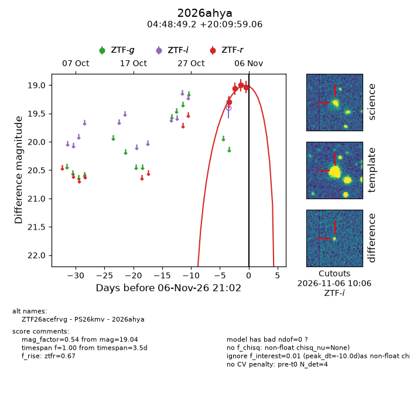
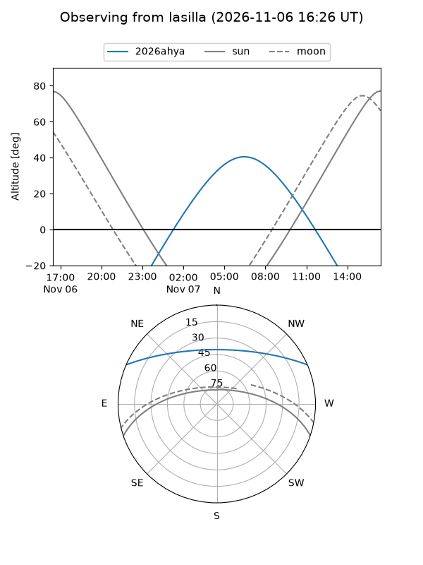
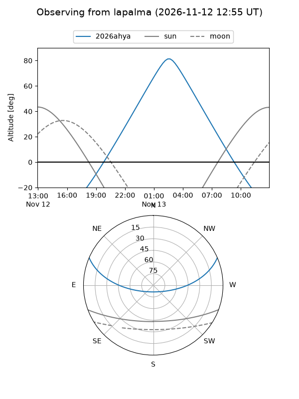
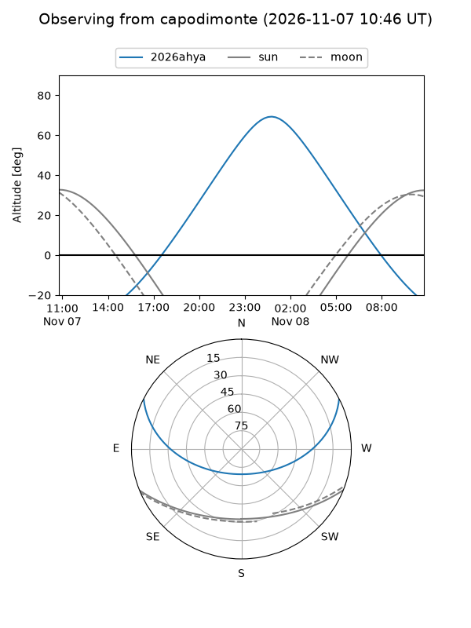
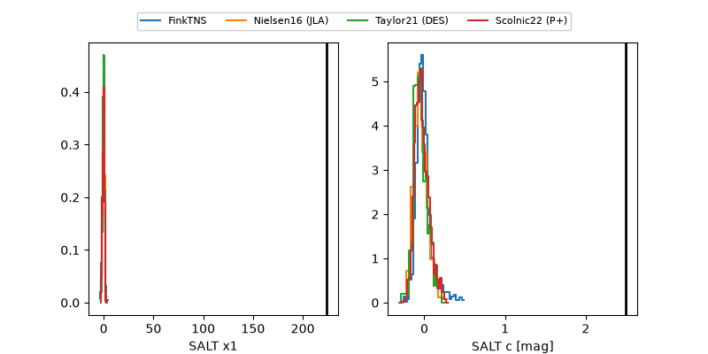

2026ahya
Target 2026ahya at 2026-11-06 21:04
Aliases and brokers:
FINK-ZTF: ztf.fink-portal.org/ZTF26acefrvg
Lasair-ZTF: lasair-ztf.lsst.ac.uk/objects/ZTF26acefrvg
ALeRCE-ZTF: alerce.online/object/ZTF26acefrvg
YSE-PZ: ziggy.ucolick.org/yse/transient_detail/2026ahya
TNS name: wis-tns.org/object/2026ahya
Direct TNS query: direct search
alt names
ZTF26acefrvg (ztf,fink_ztf)
2026ahya (tns,yse)
PS26kmv (panstarrs)
Coordinates:
equatorial (ra, dec) = 72.2051,+20.16641
equatorial (HMS+DMS) = 04:48:49.23,+20:09:59.06
galactic (l, b) = (179.8997,-15.58988)
Flags:
peak dt: -10.0
Photometry:
last ztfr=19.04
4 ztfr detections
Lightcurve

Visibility



Additional plots
